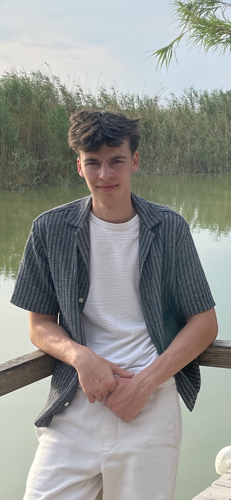

Nathan Serry
I'm an Engineering Student

More than a student.
I don't just study engineering — I practise it. Real projects, real code, real responsibility.
My journey started with curiosity. While most people use technology, I've always wanted to understand how it works — and then improve it.
Long before university I was already writing production-quality code: API integrations, SDK libraries, customer-facing technical support. Real deliverables at a financial technology company — not internship busywork.
Today I'm in my first year of Engineering Sciences (Burgerlijk Ingenieur) at Ghent University, building a rigorous mathematical and physical foundation on top of practical experience that most students my age don't yet have.
Where I've contributed.
Real roles with real deliverables — across software engineering, digital marketing, and education.
Managed the full digital presence for multiple sports brands: social media strategy, marketing campaigns, website maintenance, and internal tooling. A rare role combining technical depth with business thinking and creative communication.
Responsible for teaching swimming to children aged 5–7. Developed clear, adaptive explanations tailored to different learning styles, managed group safety, and built trust with parents and fellow instructors.
Fast-paced hospitality environment requiring discipline, precision teamwork, and the ability to consistently deliver quality service under sustained pressure.
Things I've built.
University prototypes, personal experiments, and production contributions — always driven by the same question: "How does this work, and can I make it better?"
University engineering project: designed and built a paper-based touchpad using graphite's conductive properties and an Arduino microcontroller. A physical bridge between materials science, electronics, and embedded programming.
Personal deep-dive into local AI systems using Ollama and open-source models. Experimenting with prompt engineering, model optimization, and building practical automation workflows — well before it became mainstream.
Contributed to production-grade SDK libraries in Python and PHP used by enterprise clients of a financial technology platform. Also built front-end components in Angular, wrote integration guides, maintained API documentation, and supported developers integrating the product.
Researched, selected, and assembled a complete desktop PC from individual components in 2023 — still the most satisfying thing I've built. From CPU compatibility and thermal management to cable routing, the build deepened my understanding of computer architecture, hardware interfaces, and system-level performance in a way no course could.
University web project exploring the advantages of modular design across contemporary technology — from software architecture to hardware systems. Built as a standalone informational site with clean hierarchy and clear visual structure.
View LiveMy technical toolkit.
Built through real use, not just tutorials. Every entry here has been applied in an actual project or professional context.
How I think.
I'm drawn to situations where there's no obvious solution. Breaking a complex problem into smaller, understandable pieces is what engineering is really about — and it's the part I enjoy most.
Whether it's debugging a failing API integration, wiring a circuit prototype, or explaining a concept to a 6-year-old, my approach stays the same: understand first, then act.
The journey so far.
Seven years of building, experimenting, and growing.
Let's work
together.
Open to internships, student jobs, collaborations and interesting conversations. Whether you have a project in mind or just want to connect — reach out.